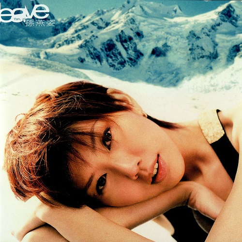

SUN YAN ZI 孫燕姿
孫燕姿（英文名：Stefanie Sng ，1978年7月23日），生於新加坡，是著名華語流行音樂女歌手。
2000年在台灣出道並發行同名專輯《孫燕姿》，憑藉歌曲〈天黑黑〉一曲成名，並被譽為華語「四小天后」之一。
出道前
孫燕姿父親是新加坡南洋理工大學教授，母親在工藝學校執教，家教甚嚴，有一姊一妹。父親是燕姿音樂的啟蒙者，孫燕姿從小熱愛音樂，五歲開始學習鋼琴，奠定了日後音樂基礎。為彌補消瘦的身軀，也學習了不少的運動，如游泳、搏擊、籃球等。孫燕姿十歲時第一次在舞台上唱歌，並獲得過英國皇家業餘八級鋼琴文憑。初級學院時期，父母一直希望孫燕姿可以考上新加坡南洋理工大學，孫燕姿亦順利考上該大學行銷學系，並在2000年從新加坡南洋理工大學行銷學系以優異成績畢業。
大學時期，曾擔任校園樂團主唱，並於十八歲時創作了第一首歌曲《Someone》。母親後來為孫燕姿報名李偉菘音樂學校，學習唱歌。1998年，當時即將上任台灣華納音樂董事長的周建輝到訪李偉菘音樂學校，探班正在新加坡錄音的天后鄭秀文，當時華納有意從各地發掘新人，李偉菘安排數位表現較好的學員唱歌，孫燕姿獨特的的嗓音和紮實的音樂功底立刻引起了華納製作人的高度興趣，表示要簽她。但由於孫爸爸堅持「如果要專心唱歌就要先把大學專心念完」，而燕姿也堅持要讀完大學。固執而有個性的孫燕姿最終打動了華納公司，公司決定等她兩年，並積極準備推出這個重量級的新人。
ALBUM
-
孫燕姿同名專輯
-
我要的幸福
-

風箏
-
Start自選集
-

Leave
-
未完成
-
The Moment
-
Stefanie
-
完美的一天
-
逆光
-
是時候
-
克卜勒